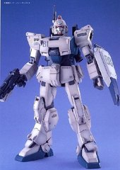
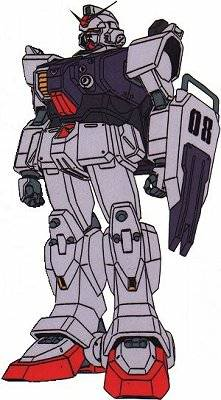
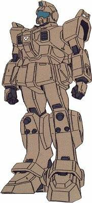
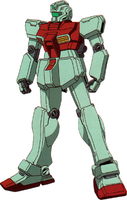
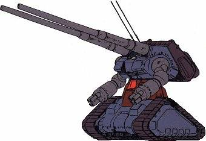

机体番号：RX-79[G]Ez-8
机体类型：陆战用试作型MS
制造商：地球联邦军
所属：联邦
初次配备：U.C.0079
内部环境：标准式驾驶舱
尺寸全高：18.0米
本体重量：51.5吨
全备重量：71.3吨
装甲材料及结构：月神钛合金（LunarTitanium）
发电机出力：1380KW
推进力：52000KG
加速度：0.74G
装备及设计特征：传感器探测有效半径：5900米
固定武装：头部35mm机枪×2；胸部12.7mm回旋式机枪；光束军刀×2
选用武装：专用盾牌
选用手部武器：100mm机枪；光束步枪；180mm加农炮；6连装火箭发射器M353a4“blood hound”

RX-79【G】路站用先行量产型高达： 本机是以白色要塞配备的RX—78—2高达所剩余的零件为主而开发出来的陆战用先行量产型MS。与以资料收集为目的而开发的、拥有浓重试做机色彩的RX—78—2高达相比，RX—79【G】陆战型高达在计划阶段，就是以投入实战为前提而制造的。为了精简部件，省略了拥有大气圈突入能力的特殊机构—核心战机系统，加装了非常实用的大型货柜搬运机构，盾的小型化降低了机体重量，装备有同RX—78—2相同出力的光束步枪，装甲材料采用了高价的月神钛合金，是一台性能、完成度非常高的机体。不过每一台的性能都有若干差异，这是因为其零件是非基准件的缘故。吉翁军大举进攻地球时，攻占的各地的要塞。联邦军为了夺回这些要塞，需要加强地面战的战斗力，所以优先执行了批量型MS—RX—79【G】陆战型高达的制作计划，先后大约生产了20架，半数左右配备给了东南亚机械混合大队。 由于MS的形态是人型，所以其武器大多都可以由步兵武器演变过来。其中存在6联装大型导弹发射器，对空对地对舰万用型的MS兵器。

RGM-79[G]陆战先行量产型吉姆： 本机是RGM-79型的路站用先行量产型机体，为了降低成本，换装了低出力的发电机，因此无法使用光束武器。本机的装甲采用了月神钛合金，武器方面有100mm机枪、火箭发射器和六联装导弹发射器等等，比较充实。于后来的RGM-79型相比，本机具有更强的战斗能力，本机主要在东南亚机械化混成大队中配置了4个小队。

RGM-79【E】宇宙用量产型吉姆： 本机是联邦军开发的宇宙战用量产试作型MS，属于比较早期的应急型机体，基本设计上于RGM-[G]陆战用先行量产型吉姆有很多相似之处，在机体内部也有很多相似之处，因此本机可以说是RGM-[G]陆战用先行量产型吉姆的宇宙式样机。

RX-75先行量产型钢坦克： 本机是联邦军开发的炮击战用长距离支援型MS，本机废除了核心调节器系统，以旧式涡轮发动机作为能源系统，使得机体上半身可以回转。此时机体操纵和火器管制分属不同的系统，因此需要驾驶员和炮手两人密切配合操作。本机的性能并不突出，因此生产的台数较少，有三架参加了联邦军对东南亚的吉翁军秘密基地的攻略战，但在MS-07B-3型的攻击下全部大破。